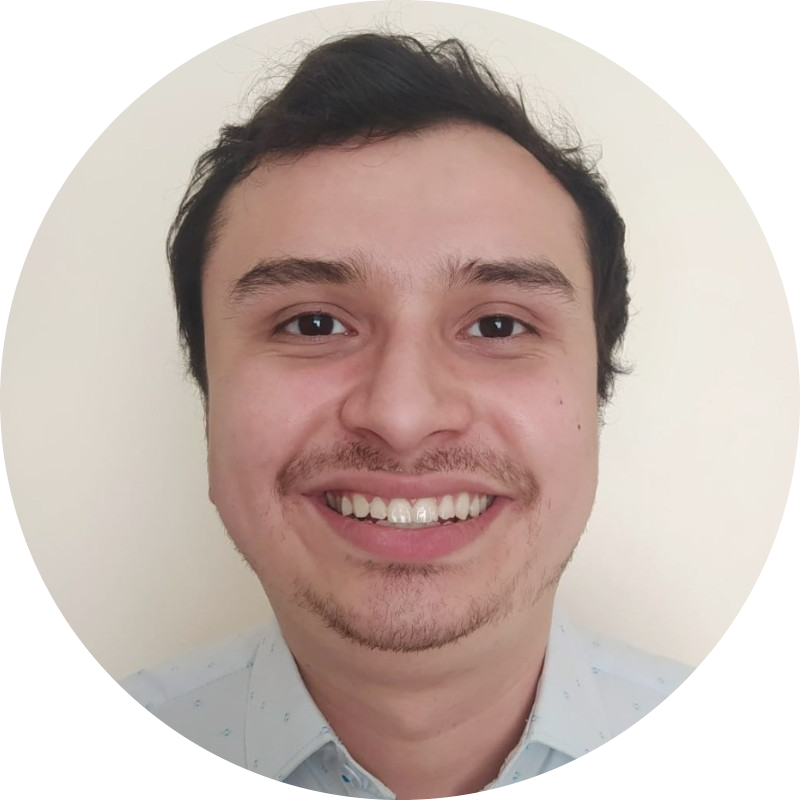

|  | Luis Miguel Zabala GualteroSoftware Development Engineer in Test | Solera-Omnitracs A committee professional with a solid background in mechanical and mechatronic engineering. My time in research area has taught me the value of working as a team member towards the same goal and has given me experience in personnel and resource management. At the same time, it has allowed me to improve techniques and standardize new ones. I am very motivated and open to new knowledge. |
| 2018-2020 | PhD in Engineering | | | Specialty in plastic materials science and software |
| 2016-2017 | Master in Automotive Engineering | | | Specialty in plastic materials science and software |
| 2010-2015 | Bachelor in Mechanical Engineerr | | | Specialty in automation and software |
| Dates | Work | ||
|---|---|---|---|
| 2022-2022 | Intermediate HiL Engineer | | | P3 Group |
| 2018-2020 | Research PhD Student | | | Tecnológico de Monterrey, Campus Estado de México |
| 2016-2017 | Research Scholar | | | Tecnológico de Monterrey, Campus Toluca |
| 2014-2015 | Laboratory manager | | | Universidad Industrial de Santander, LabAI |
| Soft Skills | Hard Skills | Lenguages |
|---|---|---|
|
|
|